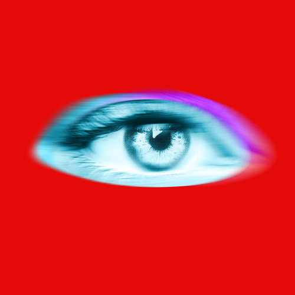

Sobre a Música
- Música: Self Aware
- Artista/Banda: Temper City
- Ano de lançamento: 2026

Temper City é formado pelo vocalista Eytan Peled e pela dupla de produtores Sync (Aviv Barenholtz e Chen Kordova), que antes de assumirem os holofotes já tinham uma carreira sólida escrevendo e produzindo mais de 100 músicas para outros artistas, incluindo colaborações com Fuerza Regida e Dimitri Vegas.
"Self Aware" é o single de estreia da banda, lançado em 15 de fevereiro de 2026, e viralizou rapidamente no TikTok. Musicalmente, a banda mistura a energia crua do indie do início dos anos 2000 com a atmosfera mais polida do pop alternativo de meados da década de 2010.
Letra
Oh
no smoke with no fire
No silence if there's no sound
One way or another
You're going to put me out
Drinks flowing like water
Too drunk to turn off the light
Stay under the covers
(Oh) who knows how we'll end the night
Just don't hang your hopes on me
I wanna feel something
God, you look so pretty
When you tell me that you love me
I wish that I could lie
But my mind gets in the way
I know you think that I'm
Always way too self-aware
Oh, we could never be together
But it's nice to play pretend
I wish that I could lie
But I'm way too self-aware